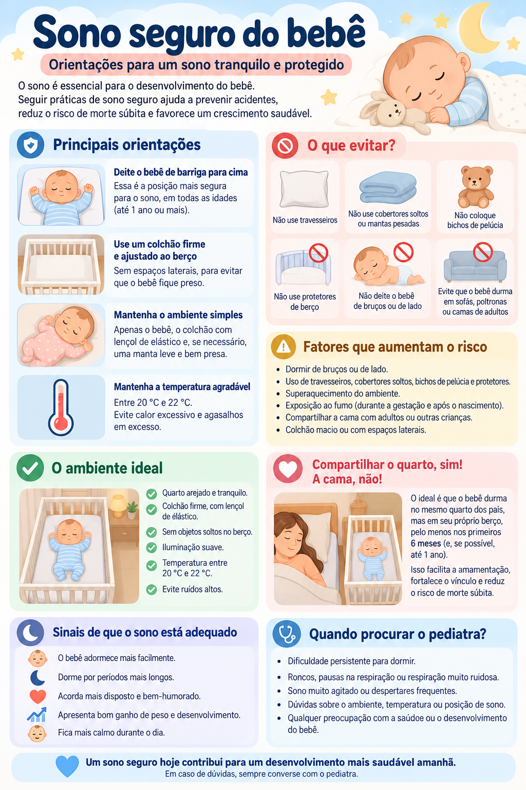

Sono seguro do bebê
Como organizar o ambiente e a posição de dormir para reduzir riscos durante o primeiro ano de vida.
Como deve ser o local de sono?
Superfície firme e plana
Use colchão firme, bem ajustado ao berço e sem inclinação.
Berço livre
Não deixe travesseiros, almofadas, rolinhos, ninhos, protetores fofos, pelúcias ou cobertas soltas junto ao bebê.
Evite superaquecimento
Não exagere nas roupas e não cubra a cabeça do bebê durante o sono.
Não use dispositivos inclinados
Elevar a cabeceira ou usar posicionadores não é recomendado como estratégia de sono seguro, inclusive para refluxo.
E quando o bebê aprende a rolar?
Continue colocando o bebê inicialmente de barriga para cima. A nota da SBP baseada nas recomendações da AAP informa que, quando a criança já consegue rolar, não é necessário desvirá-la repetidamente durante a noite.
Bebê conforto serve para o sono de rotina?
Não. Assentos de carro e dispositivos semelhantes não são recomendados como local rotineiro de sono. Ao chegar ao destino, o bebê deve ser transferido para uma superfície apropriada quando for possível fazê-lo com segurança.
Evite no berço
- travesseiros, almofadas e rolinhos;
- ninhos e superfícies macias;
- pelúcias e objetos soltos;
- cobertas e lençóis soltos próximos ao rosto;
- cordões, fios ou cortinas ao alcance do bebê.
Infográfico

Fontes e revisão
SBP — Recomendações sobre sono seguro em menores de um ano
SBP — Bebê deve dormir de barriga para cima
Última revisão: setembro de 2026.